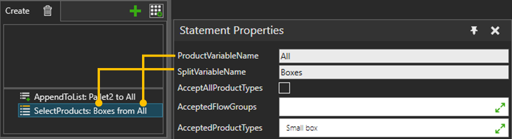

A SelectProducts statement allows you to split filtered product types from variable to a new variable.

| Name | Description |
| ProductVariableName | Name of the input list variable to split from. |
SplitVariableName |
The name of the output list variable name to split to. The variable is created if it does not exist already. The output variable is always made into a list of products regardless of if any products got copied from the input. |
| AcceptAllProductTypes | If selected, any product is accepted |
AcceptedFlowGroups |
Allows only the selected flow groups |
AcceptedProductTypes |
Allows only the selected product types |